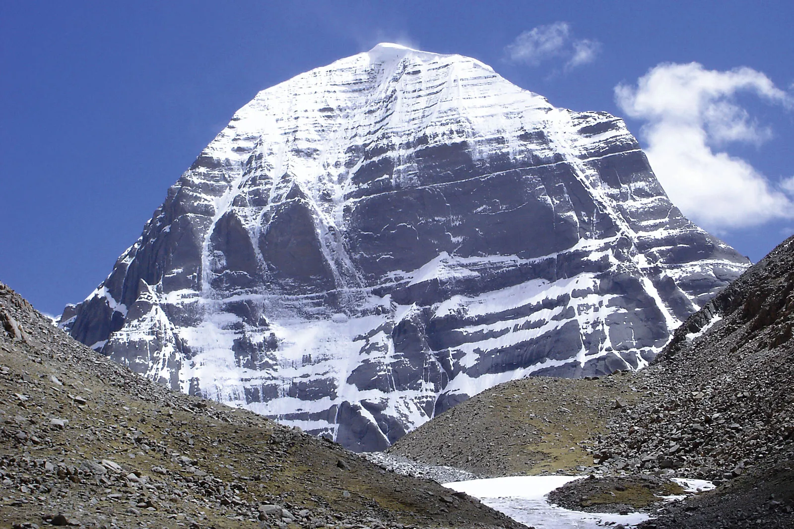
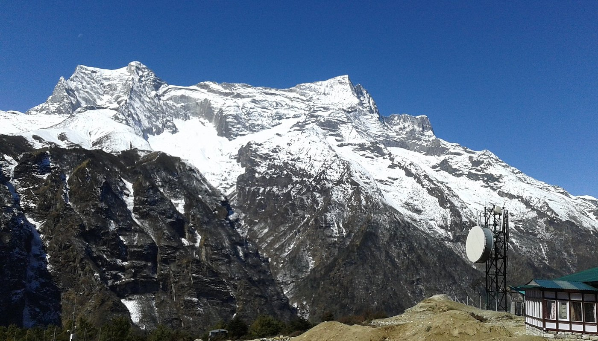

THE TRANS-HIMALAYAS-TIBETAN HIMALAYAS
Trans-Himalayas, eastward continuation of the most northerly ranges of the Himalayas in the
southern part of the Tibet Autonomous Region of China. It consists of an ill-defined mountain
area about 600 miles (1,000 km) long and 140 miles (225 km) wide in the centre, narrowing to a
20-mile (32-km) width at the eastern and western ends. The Trans-Himalayas, mainly composed of
granites and volcanic rocks of Neogene and Paleogene age (i.e., about 2.6 to 65 million years
old), are bounded by the Kailas (southwest), Nganglong Kangri (north), and Nyainqêntanglha
(southeast) mountain ranges and by the Brahmaputra (Yarlung Zangbo) River (south). Unlike the
main Himalayas, the mountains are not divided by deep river gorges and lack a definite
alignment. Passes average 17,500 feet (5,330 metres) in height, with the highest being
Chargoding Pass (19,308 feet [5,885 metres]). The first recorded European sighting of the
mountains was that of the Swedish explorer Sven Anders Hedin in 1906.


related tags